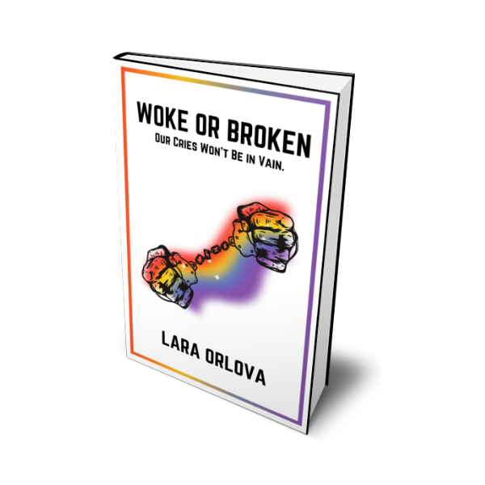

Woke or Broken by Lara Orlovska
A gripping tale of a girl imprisoned in Russia who overthrows the government from within a prison, instating democracy through mass protests.
Buy on Gumroad
Downloads: 4,500+

